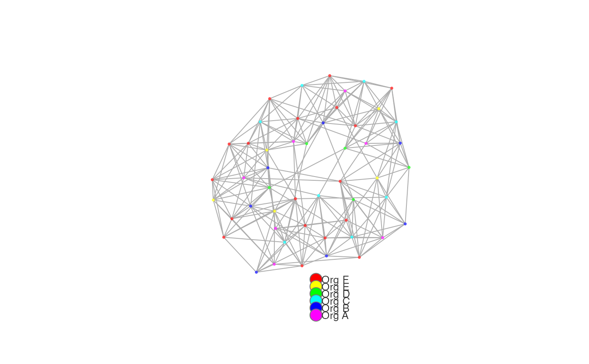

![[Experimental]](figures/lifecycle-experimental.svg)
Pass a data frame containing a person-to-person query and return a network visualization. Options are available for community detection using either the Louvain or the Leiden algorithms.
network_p2p( data, hrvar = "Organization", display = "hrvar", return = "plot", path = paste0("network_p2p_", display), desc_hrvar = c("Organization", "LevelDesignation", "FunctionType"), bg_fill = "#000000", font_col = "#FFFFFF", legend_pos = "bottom", palette = "rainbow", node_alpha = 0.7, res = 0.5, seed = 1, algorithm = "mds", size_threshold = 5000 )
Arguments
| data | Data frame containing a person-to-person query. |
|---|---|
| hrvar | String containing the label for the HR attribute. |
| display | String determining what output to return. Valid values include:
|
| return | String specifying what output to return. Defaults to "plot". Valid return options include:
|
| path | File path for saving the PDF output. Defaults to a timestamped path based on current parameters. |
| desc_hrvar | Character vector of length 3 containing the HR attributes
to use when returning the |
| bg_fill | String to specify background fill colour. |
| font_col | String to specify font and link colour. |
| legend_pos | String to specify position of legend. Defaults to
|
| palette | Function for generating a colour palette with a single
argument |
| node_alpha | A numeric value between 0 and 1 to specify the transparency of the nodes. |
| res | Resolution parameter to be passed to |
| seed | Seed for the random number generator passed to |
| algorithm | String to specify the node placement algorithm to be used.
Defaults to |
| size_threshold | Numeric value representing the maximum number of edges
before |
See also
Other Network:
external_network_plot(),
g2g_data,
internal_network_plot(),
network_describe(),
network_g2g(),
network_leiden(),
network_louvain(),
p2p_data_sim()
Examples
# Simulate a small person-to-person dataset p2p_data <- p2p_data_sim(size = 50) # Return a network plot to console, coloured by hrvar p2p_data %>% network_p2p(display = "hrvar", path = NULL, return = "plot")# \donttest{ # Return a network plot to console, coloured by Leiden communities # Requires python dependencies installed p2p_data %>% network_p2p(display = "leiden", path = NULL, return = "plot")#> Error: Error 1 occurred creating conda environment r-reticulate# } # Return a network plot to console, coloured by Louvain communities p2p_data %>% network_p2p(display = "louvain", path = NULL, return = "plot")# Return a network plot to console # Coloured by Leiden communities # Using Fruchterman-Reingold force-directed layout algorithm # Force the use of fast plotting method p2p_data %>% network_p2p(display = "hrvar", path = NULL, return = "plot", algorithm = "lgl", size_threshold = 0)#># Return a data frame matching HR variable and communities to nodes # Using Louvain communities p2p_data %>% network_p2p(display = "louvain", return = "data", algorithm = "fr")#> # A tibble: 50 x 3 #> name Organization cluster #> <chr> <chr> <chr> #> 1 SIM_ID_1 Org F 3 #> 2 SIM_ID_2 Org F 3 #> 3 SIM_ID_3 Org E 3 #> 4 SIM_ID_4 Org D 1 #> 5 SIM_ID_5 Org C 1 #> 6 SIM_ID_6 Org B 1 #> 7 SIM_ID_7 Org A 1 #> 8 SIM_ID_8 Org D 1 #> 9 SIM_ID_10 Org C 1 #> 10 SIM_ID_11 Org F 1 #> # … with 40 more rows